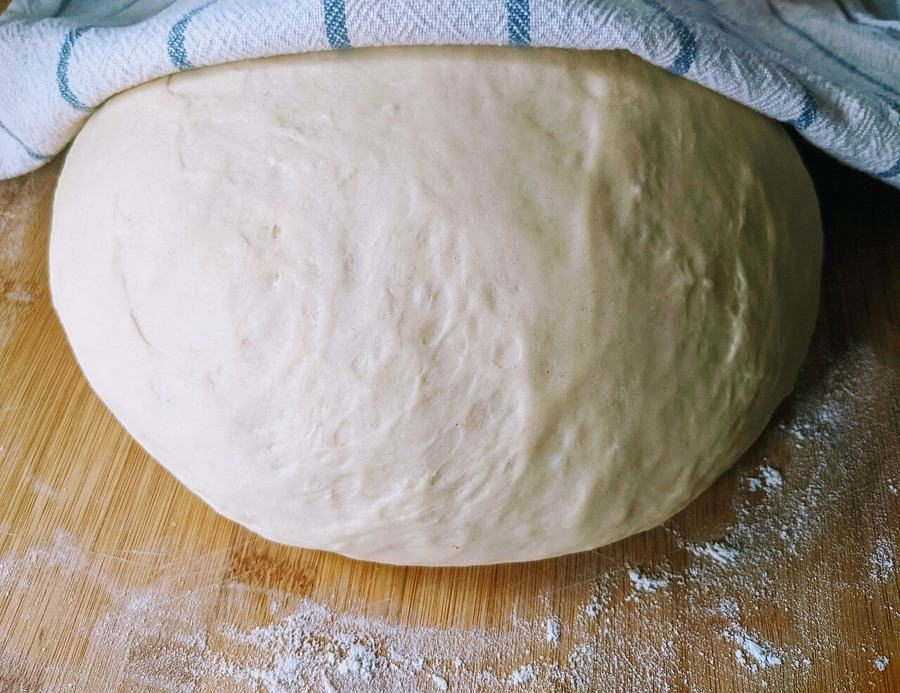

2m 警告線
店のこと
お店について確認できているのは、所在地とInstagramのアカウントだけです。
このページの「想像してみる」部分は、制作側が想像して書いたものです。お店の実際の様子・考え・メニューとは関係がありません。
確認できていること
- 店名は「boulangerie garde」、業種はパン屋
- 所在地は鹿児島県鹿児島市谷山中央５丁目９−１３(〒891-0141)
- 電話番号はなし。連絡はInstagramから
- 営業時間・定休日・メニュー・価格・ご予約・駐車場は準備中

想像してみる
「garde」という綴りから
由来は分かりません。制作側は、フランス語由来の言葉に見える綴りなので、フランスのパンの話題が好きな方に向けたお店かもしれない、と想像しました。あくまで綴りからの連想で、実際のお店の姿ではありません。
